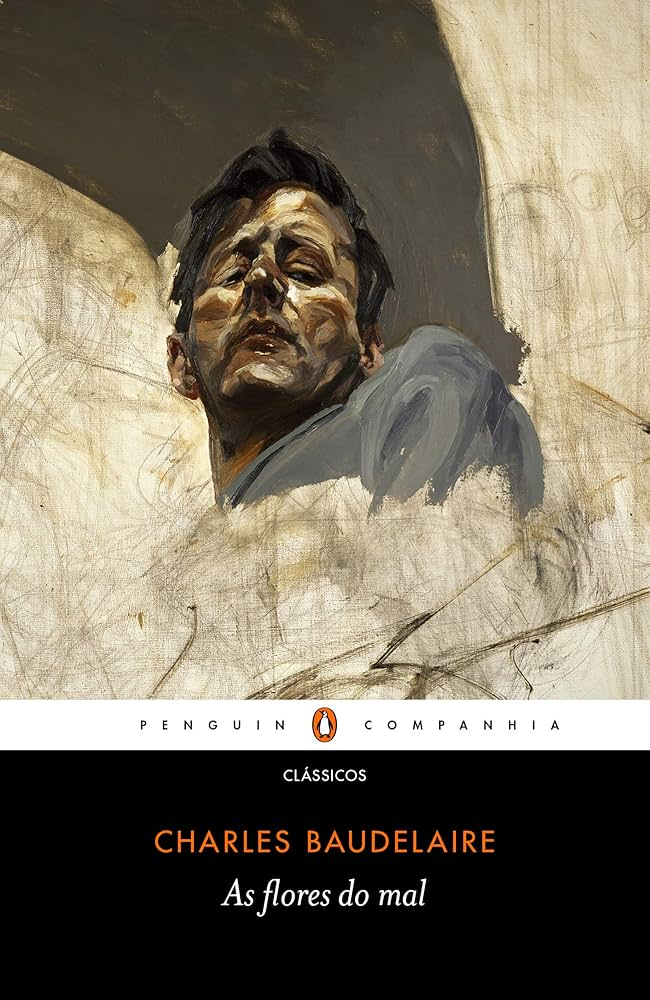

Simbolismo
O Simbolismo foi um movimento literário que surgiu no final do século XIX, como uma reação ao cientificismo e ao materialismo do Realismo e Naturalismo. Com uma linguagem subjetiva e muitas vezes mística, o Simbolismo valorizava a espiritualidade, os mistérios da existência e as emoções profundas, explorando a musicalidade das palavras e o uso de símbolos para expressar o que está além da realidade concreta.
Principais características do Simbolismo
1. Subjetividade e Espiritualidade: A literatura simbolista é introspectiva, voltada para a expressão de sentimentos íntimos e questões espirituais. Ela busca revelar o mundo interior dos seres humanos, muitas vezes relacionado ao inconsciente e ao misticismo.
2. Uso de Símbolos e Metáforas: Os autores simbolistas utilizavam símbolos e metáforas para representar ideias e sentimentos abstratos. A linguagem figurativa e a sugestão são predominantes, criando uma atmosfera de mistério e ambiguidade.
3. Musicalidade e Ritmo: A poesia simbolista dá grande importância à sonoridade das palavras e ao ritmo dos versos. O Simbolismo se preocupa com a estética da forma, buscando criar uma musicalidade que envolve o leitor em uma experiência sensorial.
4. Temas Místicos e Oníricos: Os temas recorrentes no Simbolismo envolvem o mistério, o oculto, o sonho e o subconsciente. As obras simbolistas frequentemente abordam o imaginário, o transcendente e as experiências metafísicas.
Contexto histórico
O Simbolismo surgiu no fim do século XIX, em um contexto de crise do pensamento racional e científico, como resposta às transformações trazidas pela Revolução Industrial e pelas novas descobertas científicas. No Brasil, o movimento aparece como uma reação ao Realismo e Naturalismo, buscando uma literatura mais espiritual e menos comprometida com a realidade objetiva.
Obras e autores importantes
Cruz e Sousa: "Broquéis"
Alphonsus de Guimaraens: "Setenário das Dores de Nossa Senhora"
Charles Baudelaire: "As Flores do Mal"
Conclusão
O Simbolismo se destaca por sua busca por uma literatura mais subjetiva, introspectiva e espiritual, em oposição ao objetivismo realista. Com uma linguagem cheia de símbolos, musicalidade e sugestões, os autores simbolistas criaram uma atmosfera que valorizava o inconsciente, o místico e o transcendental.
Embora não tenha sido tão popular quanto outros movimentos literários, o Simbolismo influenciou profundamente a poesia moderna, abrindo caminho para novas formas de expressão literária no século XX.